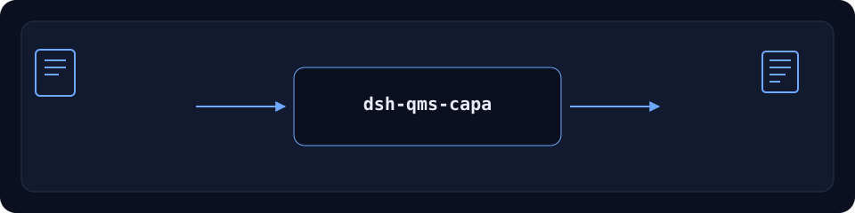

dsh-qms-capa
Official repository. The only official repository of this package, maintained by PerryLink. Same-name repositories under other accounts are not affiliated. Apache-2.0.


QMS NCR ingest, batch alias resolution, impact evaluation, CAPA and 8D state.
Status: alpha / public-synthetic / partial / not counted / not GA. No customer evidence, customer data, or production-readiness claim.
Maintenance status: ✅ Active
Active since 2026-11-01: feature work, hardening and fresh evidence are in progress.
English · 简体中文 · Español · Português · हिन्दी
dsh plugin --profile <profile> add dsh-qms-capa
⭐ If this helps, a star makes it easier for the next person to find it. Nothing is gated behind it.

Workflow: local input → plugin → local output. No model call is required.
Install
Install and verify:
dsh plugin --profile <profile> add dsh-qms-capa
dsh --profile <profile> --dump-config | grep dsh-qms-capa
Uninstall:
dsh plugin --profile <profile> remove dsh-qms-capa
Install channels
npm is the recommended channel; the others are for pinning or offline use.
- npm (recommended):
dsh plugin --profile <profile> add dsh-qms-capa - git channel:
dsh plugin --profile <profile> add github:PerryLink/dsh-qms-capa - tarball:
pnpm packthendsh plugin --profile <profile> add ./dsh-qms-capa-<version>.tgz - 1024 store:
npm i -g dsh1024thendsh1024 plugin --profile <profile> add dsh-qms-capa
What it does
QMS NCR ingest, batch alias resolution, impact evaluation, CAPA and 8D state. Runs locally on DeepSeek Harness. The table below is the exact tool surface; the examples use the real command surface.
Input and output stay local; nothing is uploaded.
Tools
Tool names and descriptions are kept in English to match the runtime output.
| Tool | Purpose | Risk |
|---|---|---|
qms.ncr |
Ingest and dedupe NCR rows | R1 local write |
qms.batch_alias |
Resolve batch aliases | R0 |
qms.impact |
Evaluate affected batches/orders | R0 |
qms.capa |
Open/classify/advance a CAPA | R1 local write |
qms.8d |
Track D1–D8 evidence and state | R1 local write |
Quick start
dsh plugin --profile <profile> add dsh-qms-capa
dsh --profile <profile> --dump-config | grep dsh-qms-capa
Examples
Fixture-backed example
Input: fixtures/public/mit/ncr_register.redacted.csv
Command: pnpm test
Acceptance row:
| req_id | metric | threshold | actual | pass | source | counted |
|---|---|---|---|---|---|---|
| SKU-08-A01 | NCR 入库（30） | 30/30 | 30 | true | public/synthetic | false |
This is a fixture-backed acceptance row, not a customer run; no output is invented.
Limits
- Public/synthetic only; no customer data or customer evidence.
- Alpha/partial, not counted, no GA or production-readiness claim.
- No model or network call unless a tool explicitly says so.
- The exact per-tool boundaries are in the table and
ACCEPTANCE.csv.
Public sample
Public/synthetic fixtures live in fixtures/; ACCEPTANCE.csv records the public checks with counted=false.
Development
pnpm install --frozen-lockfile
pnpm build && pnpm lint && pnpm typecheck && pnpm test
Compatibility
| Surface | Status |
|---|---|
| Harness | dsh >=0.2.1-rc.3 <0.3.0 |
| Node | >=24.9.0 <25 |
| Platforms | All; local files only |
| Data | No network, no model call, no upload |
Permissions & data
- Runs locally; no network, no model call, no upload.
- Public/synthetic fixtures only; no customer data, no customer evidence.
- Alpha/partial; not counted, no GA or production-readiness claim.
- Actively maintained: new features and hardening land in alpha releases.
Related work
Sibling packages and family indexes: dsh-ghg · dsh-policy-ledger
Family
DSH domain plugin family (23 packages + 2 suites)
Mainline family — 96 current install specs
License
Apache-2.0. See LICENSE, NOTICE, THIRD-PARTY-NOTICES.